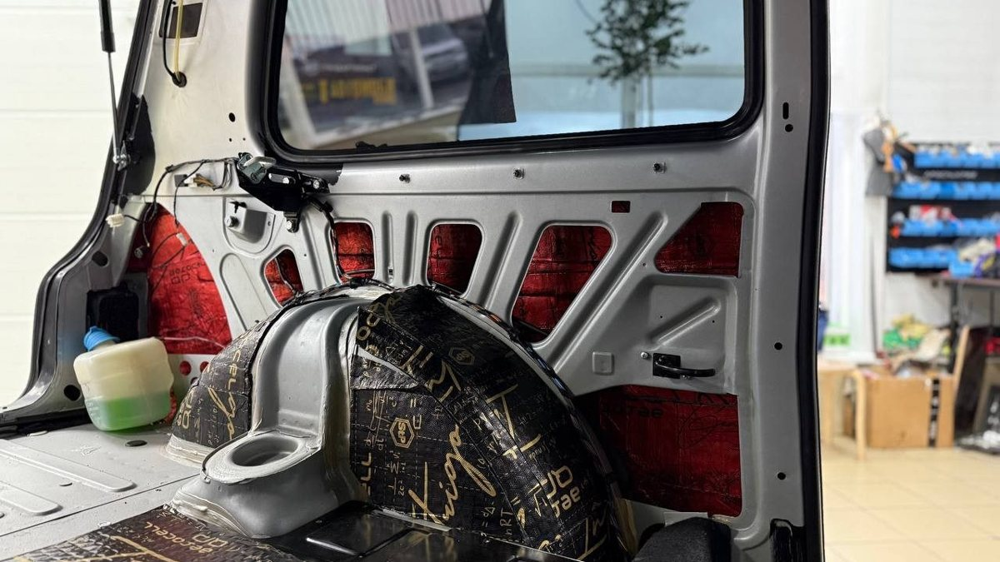

Вы взяли у знакомого прицеп, чтобы вывезти с дачи под Ярославлем последнее до весны: старые доски, мешки, садовую мебель на зимнее хранение в гараж. Фаркоп на машине стоит давно, его поставили «где подешевле». Прицеп сцепили, вилку воткнули. Задние огни прицепа не горят. Потом загораются, но поворотник мигает не с той стороны. А на приборке выскакивает ошибка, которой раньше не было. Темнеет, впереди трасса и мокрый снег.
Такие истории случаются не из-за самого крюка. Крюк обычно держит. Проблемы начинаются в проводах.

Фаркоп – это две части, а не одна
Первая часть – железо: балка, которая крепится к кузову, и шар. Её подбирают под конкретную модель, с креплениями в штатные точки, а не «примерно подходящую». Нагрузку, которую можно тянуть, определяют и сам фаркоп, и документы на машину, а не надежды хозяина.
Вторая часть – электрика: розетка и то, как она подключена к машине. Через неё прицеп получает габариты, стоп-сигналы и поворотники. И именно здесь кроется большая часть неприятностей.
Перед установкой стоит честно ответить себе, что вы собираетесь возить. Лёгкий прицеп с дачным хламом пару раз в год и лодка на прицепе каждые летние выходные – разная нагрузка и разная частота. От этого зависит, какой фаркоп брать, какую розетку ставить и нужен ли съёмный шар. Чем точнее ответ, тем меньше сюрпризов потом.
Почему прицеп «сходит с ума»
На старых машинах розетку часто подключали прямо к проводам задних фонарей. На современных так делать рискованно: электроника машины следит за лампами, и лишняя нагрузка или чужое подключение может вызвать ошибки, мигание или отключение каких-то функций. Поэтому на таких машинах ставят согласующий блок – он берёт сигналы от машины и отдаёт их прицепу, не вмешиваясь в штатную проводку.
Второй момент – тип розетки. Распространены семиконтактные и тринадцатиконтактные. Если у прицепа одна, а у машины другая, понадобится переходник, и лучше знать об этом до поездки, а не на обочине.

Зима добавляет своё
Розетка висит под бампером, ровно там, куда летит вся грязь с реагентами. Если её не закрывать крышкой и не следить за контактами, через сезон они окисляются, и сигнал до прицепа доходит через раз. Поворотник то есть, то нет – и выясняется это обычно уже в дороге.
Съёмный шар зимой тоже стоит снимать и хранить в машине. Меньше грязи на механизме, меньше шансов задеть кого-то во дворе или ободрать ногу, когда достаёте пакеты из багажника.
Что спросить, прежде чем ставить фаркоп
Подходит ли этот фаркоп именно к вашей модели и с какими документами он идёт. Как будет подключаться розетка: напрямую или через согласующий блок, и почему именно так. Какая розетка будет стоять и подойдёт ли она к прицепам, которые вы реально берёте. Съёмный шар или нет. Хороший мастер ответит на всё это до начала работы, а не после.
Если фаркоп уже стоит и прицеп ведёт себя странно, не ждите весны и дачного сезона. Подключите прицеп дома во дворе, попросите кого-нибудь пройтись вокруг и проверить габариты, стопы и оба поворотника. Пять минут сейчас лучше, чем разборка с проводами в апреле на трассе М8.
Мы в Ярославле – студия «Автостиль», проспект Октября, 82б. Устанавливаем фаркопы и подключаем розетку, на все работы и оборудование даём гарантию. Подробнее – на странице про дополнительное оборудование, телефон +7 902 220-75-55.